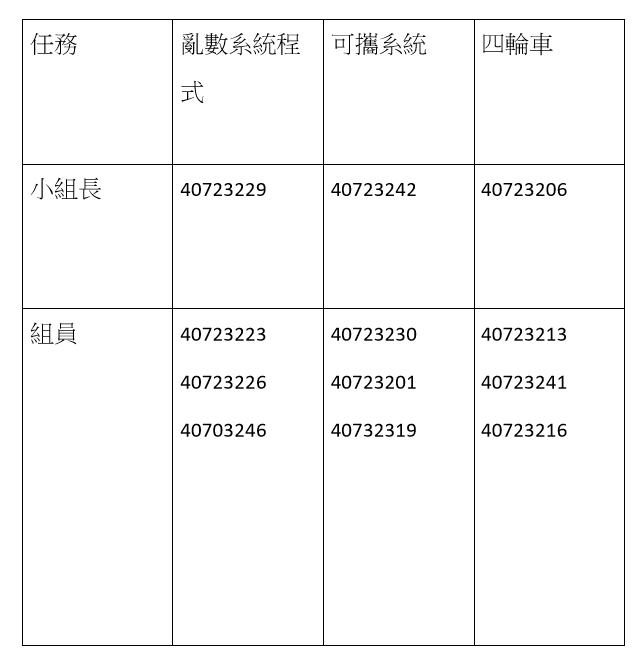

weeks <<
Previous Next >> week6~9
week1~5
week1
創建github倉儲、設定新版可攜式套件
1.創建課程倉儲並git clone到近端。
2.用git config 設定name、email及proxy。
3.用新指令 git submodule add 載下模組。
4.輸入 python -m pip install flask cors 指令裝 pip 套件。
5.練習開啟近端及遠端並更改網頁名稱。
week2
將可攜系統python 3.7.3更新至python 3.8.2
1.先去GOOGLE找Python
2.下載Windows x86-64 executable installer 載完點並不要勾選pip選項，接著按下next選取放置資料夾
3.在隨身系統下新增放置資料夾cd2020，並在cd2020下新建資料夾data，data<py382<wscite432<portablegit
4.下載SciTE系統 full 64-bit download，下載完後解壓縮至data下的wscite432
5.在cd2020下建立新的start.bat及stop.bat
start.bat:
@echo off
set Disk=y
subst %Disk%: "data"
%Disk%:
set HomePath=%Disk%:\home_mdecourse
set HomeDrive=%Disk%:\home_mdecourse
set Home=%Disk%:\home_mdecourse
set USERPROFILE=%Disk%:\home_mdecourse
REM 將系統 Python 程式的 io 設為 utf-8
set PYTHONIOENCODING="utf-8"
set PYTHONPATH=%Disk%:\py373\DLLs;%Disk%:\py373\Lib;%Disk%:\py373\Lib\site-packages;
set PYTHONHOME=%Disk%:\py373
set GIT_HOME=%Disk%:\portablegit\bin\
set GIT_SSH=%Disk%:\putty\plink.exe
set path_python=%Disk%:\py373;%Disk%:\py373\Scripts;
set path_msys2=%Disk%:\msys64\mingw64\bin;
REM coreutils is for compiling fossil scm
set path_coreutils=%Disk%:\coreutils-5.3.0\bin;%Disk%:\depends22_x64;
set path_tcc=%Disk%:\tcc;
set path_cmake=%Disk%:\cmake-3.10.1-win64-x64\bin;
set path_nodejs=Disk%:\nodejs;%Disk%:\nodejs\appdata\roaming\npm;
set path_git=%Disk%:\portablegit\bin;
set path_xming=%Disk%:\Xming;
set path_latex=%%Disk%:\Pandoc;%Disk%:\TinyTeX\bin\win32;
path=%Disk%:;%path_python%;%path_msys2%;%path_tcc%;%path_git%;%path_cmake%;%path_coreutils%;
start /MIN %Disk%:\wscite415\wscite\SciTE.exe
start /MIN %Disk%:\wscite415\wscite\SciTE.exe
start /MIN cmd.exe
start /MIN cmd.exe
start /MIN cmd.exe
start /MIN cmd.exe
Exit
stop.bat:
@echo off
set Disk=y
path=%PATH%;
taskkill /IM python.exe /F
taskkill /IM pythonw.exe /F
taskkill /IM scite.exe /F
REM 終止虛擬硬碟與目錄的對應
subst %Disk%: /D
REM 關閉 cmd 指令視窗
taskkill /IM cmd.exe /F
EXIT
8.下載MSYS2 msys2-x86_64-20190524.exe 至data
9.下載PortableGit 64-bit Git for Windows Portable 至portablegit
10.裝入pip，另存新檔到data
11.測試將python3.8.2版本，將缺少的模組下載回來
python get-pip.py
pip install flask bs4 lxml pelican markdown flask_cors leo
第一次線上會議
一.成員簽到
40723201 (簽) 已建立完成網站
40723206 (簽) 已建立完成網站 小組長
40723213 (簽) 已建立完成網站
40723216 (簽) 已建立完成網站
40723223 (簽)
40723226 (簽) 已建立完成網站
40723229 (簽) 已建立完成網站 小組長
40723230 (簽) 已建立完成網站
40723241 (簽) 已建立完成網站
40723242 (簽) 已建立完成網站 小組長
40723246 (group leader) (簽) 已建立完成網站
40732319 (簽)
二.討論日後分工
1.由(40723201、40723206、40723230、40723241、40723246)，已經建立
好網站及編輯完網站的同學，前去協助還沒完成的同學
2.40723213、40723242 督處尚未完成的同學，互相協助來完成第一周課程
3.40723223、40723223 負責處理小組會議
4.40723246 負責製作小組會議
5.40723241、40723216 提醒小組問題及完成分組作業
三.有問題的同學提出問題
組員會議中提醒的事項
1.網站的格式及編譯
2.其餘的工作分配
3.PDF 放倉儲的位置及如何放置
分工表

week3
上週我被分派為小組長，我帶領的組員是40723213、40723216、40723241，我們被分派做的部分是研究並探討四輪車的模擬，因為我是小組長所以我分配成BubbleRob tutorial、Line following BubbleRob tutorial、External controller tutorial、Simulation 四個部分，每一個人分別研究一部份。
Four Wheel Car-Analysis and integration
BubbleRob tutorial: 此部分由40723206提供
在此教程中會讓我們設計簡單的BubbleRob機器人並進行一些基礎的模擬操作，而大二上我們其實就有實際的以v-rep操作過這個教程，在這個教程中的說明包括了如何建造模型機器人主體、車輪及後方支撐滑塊，還有如何建造及設置障礙物，以及設定好的距離傳感器後使其去感測並避開我們所設置的障礙物，而最重要的要點是如何去設計指令讓傳動器依照我們所想要的方式去做動，且當距離感測器偵測到障礙物時才能使機器人迅速閃避障礙物，另外還有視覺辨識器，使機器人在移動時，讓我們能夠觀測到機器人行徑方向之路況。
week4
week5
weeks <<
Previous Next >> week6~9